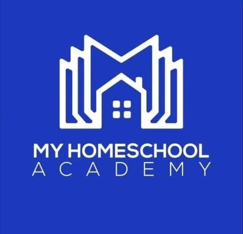

أهمية التعليم المنزلي في بناء مستقبل الطلاب
التعليم المنزلي أصبح خيارًا متزايد الشعبية بين أولياء الأمور الذين يرغبون في توفير بيئة تعليمية مخصصة لأبنائهم. يوفر هذا النظام مرونة كبيرة في اختيار المناهج والسرعة التي تناسب كل طالب، مما يعزز من فرص النجاح والتفوق.
من خلال التعليم المنزلي، يمكن للطلاب التركيز على نقاط قوتهم والعمل على تحسين نقاط ضعفهم بشكل فردي، بعيدًا عن ضغوط الصفوف التقليدية. كما يتيح هذا النظام تواصلًا أفضل بين الأسرة والمعلمين، مما يضمن متابعة مستمرة وتقييم دقيق لأداء الطالب.
فوائد التعليم المنزلي:
- مرونة في الجدول الدراسي تناسب احتياجات الأسرة.
- تعليم مخصص يناسب مستوى كل طالب.
- تعزيز القيم الأسرية والتواصل بين أفراد الأسرة.
- توفير بيئة تعليمية آمنة ومحفزة.
- إمكانية دمج الأنشطة العملية والتجارب الحياتية في التعليم.
كيف تختار المنهج المناسب؟
اختيار المنهج المناسب يعتمد على أهداف الأسرة التعليمية، ومستوى الطالب، والموارد المتاحة. من المهم مراجعة المناهج المختلفة والتأكد من توافقها مع القيم التعليمية التي ترغب الأسرة في ترسيخها.
في النهاية، التعليم المنزلي هو خيار يتيح للأسر التحكم الكامل في العملية التعليمية، مما يساهم في بناء جيل متعلم قادر على مواجهة تحديات المستقبل بثقة وكفاءة.